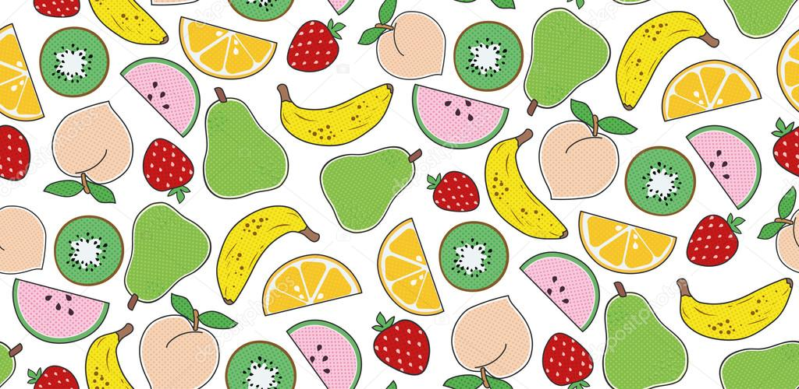

¡Bienvenidos a mi blog dedicado a una de las maravillas naturales más dulces y nutritivas: las frutas! Si eres un amante de los sabores frescos y vibrantes que nos regala la madre naturaleza, ¡has llegado al lugar adecuado!
Desde mi infancia, he tenido una profunda conexión con las frutas. Es asombroso cómo la diversidad de colores, aromas y texturas puede transportarnos a diferentes épocas y lugares con solo un bocado. A través de este blog, quiero compartir contigo mi pasión por las frutas y explorar juntos todo lo que ofrecen.
¿Estás listo para embarcarte en esta aventura frutal conmigo? ¡Prepara tus papilas gustativas y tu curiosidad, porque estamos a punto de sumergirnos en el maravilloso mundo de mis frutas favoritas!
